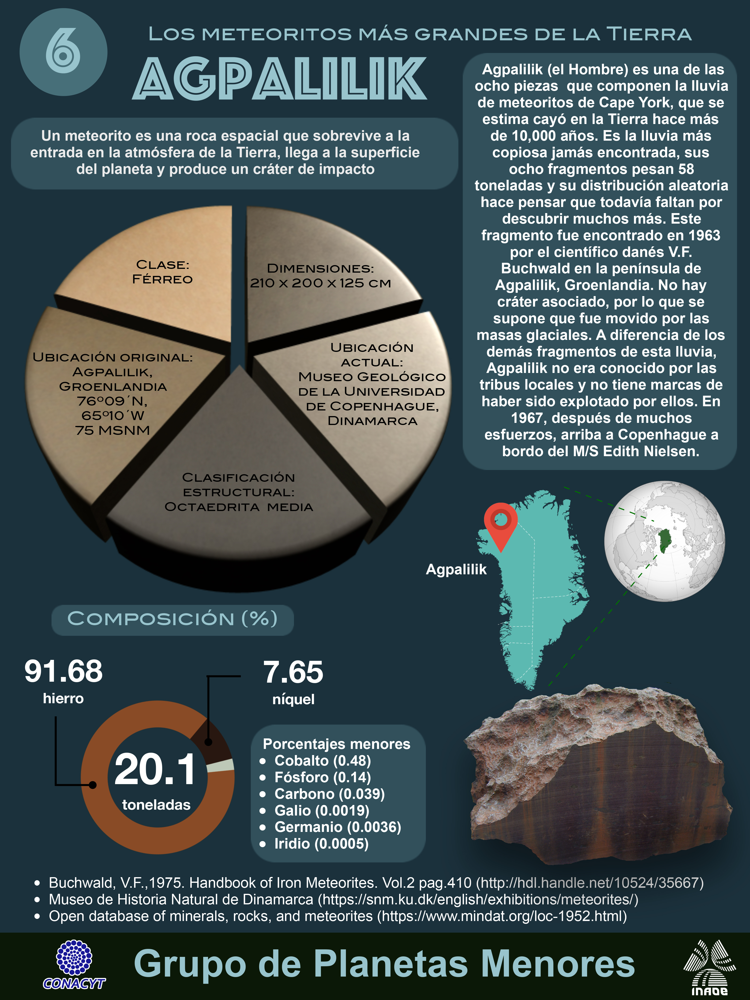
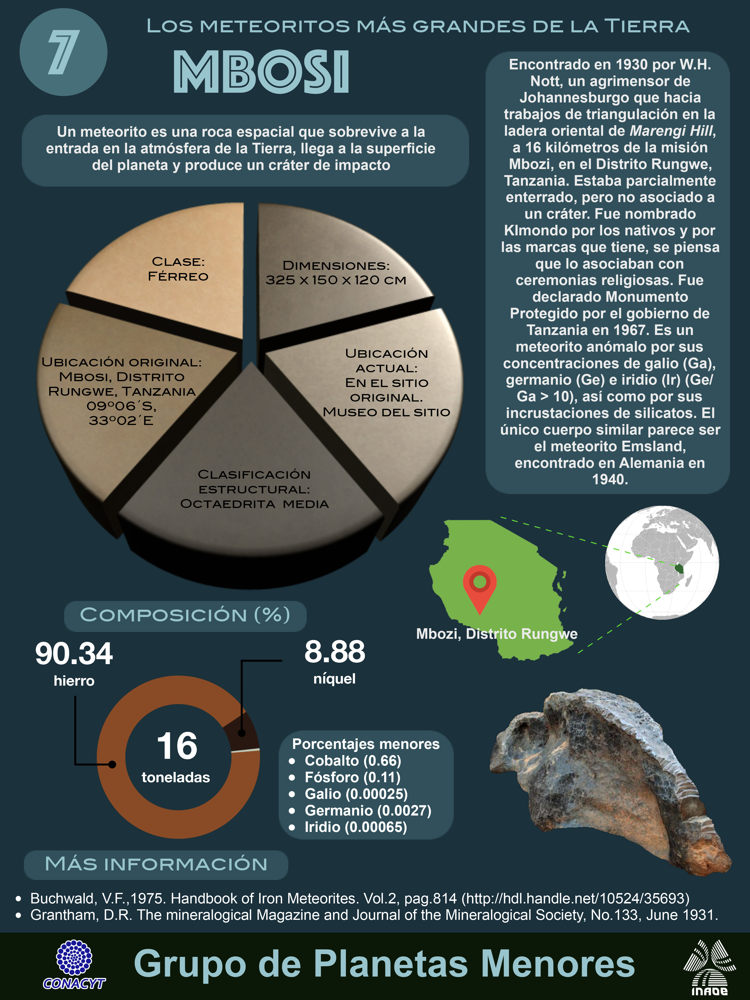

En esta página se mostrarán algunas infografías sobre los asteroides más grandes que han impactado la Tierra.


2022 - Página diseñada y desarrollada por el grupo de trabajo BUAP-INAOE del programa: Asteroides Cercanos a la Tierra (NEAs)